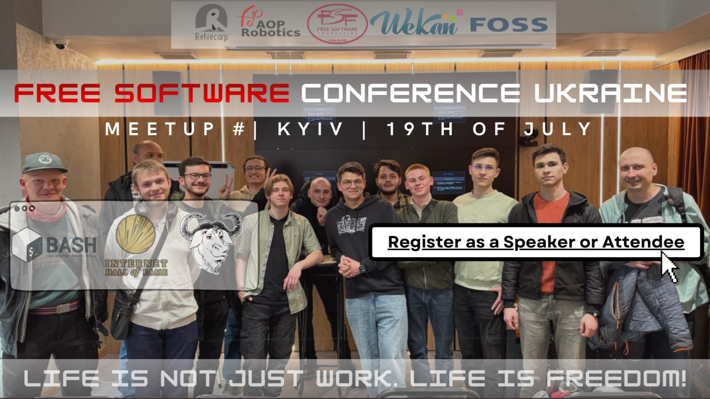

WeKan at Free Software Conference Ukraine 2026-07-19: 10 years of WeKan. Webm video (591 MB) YouTube video Slides PDF Slides LibreOffice Impress ODP

WeKan at Free Software Conference Ukraine 2025-05-18: Webm video (104 MB) Slides PDF Slides LibreOffice Impress ODP Operating Systems History slide PNG
A short summary of what WeKan has. Everything below is in the current release — see the ChangeLog for when each part arrived, and the feature docs, which follow WeKan's menus.
| Area | What WeKan has |
|---|---|
| Board views | Under six headings of the Board View menu: Swimlanes, Lists, Table, Group by Assignee, Bigboard, Map and Column sets; Calendar, Calendar Mode, Multi-board Calendar, Time, Timeline, Gantt (three engines) and Roadmap; the Scrum, Kanban flow and overview charts below; and Email, Chat, Version Control and Website - the board as a website, which a public board can show at its own address instead of the kanban - each shown, hidden and ordered per board. |
| Charts and reports | Burndown, Burnup, Cumulative Flow, Control Chart, Cycle Time, Lead Time, Flow Efficiency, Throughput, WIP Run, Aging WIP, Blocker Analysis, Monte Carlo forecasts and Process Behavior (XmR), and twelve reports - Created vs. Resolved, Net Flow, Time in List, Average Age, Throughput Run, Due Date Performance, Release Burndown, Epic Progress, Workload, Distribution, Dependency Map and Activity Heatmap - each exportable as PDF and Excel. |
| Scrum | Product Backlog, Sprints, sprint reports, velocity, roadmap, planning poker, Definition of Ready and Done, a daily standup timer and a retrospective board. |
| Kanban flow | Flow fields Blocked, Class of service, MoSCoW priority and WSJF score; list policies, a commitment point, a WIP limit per person, WIP limit groups, and lists split into Doing and Done. Each is hidden until a board turns it on, and the Admin Panel can hide it everywhere. |
| Cards | Description, labels, members, assignees, requester and assigner, received / start / due / end dates, checklists, subtasks, custom fields, attachments with PDF and Office previews and a slideshow that reads only what is on the screen, comments and replies, activity history, card colour, stickers, location, voting, card-to-card dependencies, copy / move / link, card templates and archive. The opened card remembers the width each user drags it to. |
| Lists and swimlanes | Collapse a list or a swimlane, drag to set list width and swimlane height, cards-per-list counter and sum of a custom number field in the list header, work-in-progress limits, and sorting. |
| Multi-selection | Copy, move or recolour many selected cards at once; drag-and-drop reorder of boards, swimlanes, lists, cards and checklists. |
| Search and filter | Per-board filter, advanced filter, sorting, and global search across all your boards - also inside attachments, whose content is checked against its SHA-256 when it is read; My Cards, Due Cards and My Attachments. |
| Automation | Rules as trigger → action, shown as lists, workflows or blocks; board buttons that run a rule; import of n8n, Node-RED and Trello Butler rules; global and per-board outgoing webhooks. |
| Roles | Nine per-board roles: admin, normal, normal-assigned-only, no-comments, comment-only, comment-assigned-only, worker, read-only and read-assigned-only. |
| Professional services | Workload and capacity: each person's hours against their working time across boards, absences, public holidays, allocations and placeholders for roles, billable utilization against a target, and skills with who could do the work. Budget and billing: rates and cost rates, budget against cost, forecast and margin, time by day and its approval, expenses, fixed fees and monthly retainers, quotes, and invoices of a period with VAT, payments and credit notes - as PDF, SVG, Excel, CSV and Peppol e-invoice, with the payment QR codes and bank barcodes of many countries, in each currency's own decimals. |
| Cloud Panel | For hosting many customer domains: at its own domain, the Cloud Panel keeps each domain with its own WeKan and MongoDB, or sharing one WeKan, and merges many WeKans into one; it writes the CloudFlare DNS records and the Caddy routes, keeps each customer's invoices, and has a chat with earlier Rocket.Chat and SandChat conversations imported. |
| Organizations and teams | Multi-tenancy, workspaces, and boards limited to members of the same organization or team. |
| Import | 85 sources, listed under headings, a company's products under its name: WeKan JSON and .zip; 37signals Basecamp and Fizzy; Atlassian Trello (JSON and .zip) and Jira; Google Takeout, Tasks and Keep; Microsoft Excel, GitHub, Planner, To Do, Azure DevOps Boards, Lists, Project, Outlook, Teams and OneNote; Sandstorm grain backups of twelve apps, an old Sandstorm WeKan grain among them; Kanban and project tools such as Kanboard, Nextcloud Deck, OpenProject, Asana, Taiga, Wrike, monday.com, Notion and Plane; issue trackers GitLab, Gitea, Forgejo, Linear and Redmine; task apps such as Todoist, TickTick and Vikunja; CSV / TSV, Markdown and outlines; and mail, calendars, Evernote and chats from Slack, Mattermost, Rocket.Chat, Telegram, WhatsApp and Discord, with their files; and Website: WordPress (and Squarespace, Wix and others that export its file), the WordPress REST API, Ghost, Blogger, Hugo, Jekyll, Eleventy and Astro, HTML sites, Medium and Substack, pages and posts with their images. Several services are fetched from their API with your token. Many boards import at once, an app's whole export can become a board per project, large files are streamed to disk within its free space, and imported members are mapped to real accounts. |
| Export | JSON with or without attachments, PDF, Excel, HTML, CSV, TSV, iCal, card dependencies as JSON or SVG, and the formats of some sixty other tools under the same headings - among them a Trello .zip with attachments, Jira, Fizzy, Microsoft Planner, Azure DevOps Boards, Lists, Project, Outlook, Teams and OneNote, Sandstorm grain backups of nine apps that Sandstorm restores, and websites - WordPress, Ghost, Blogger, a Hugo / Jekyll / Eleventy / Astro site, and the published HTML site itself, ready for any web server; one board or all boards at once. Every export is written a page of cards at a time, and most are read back by the tool's own import. |
| File storage | Attachments and avatars on filesystem, GridFS, S3 / MinIO, Azure Blob Storage or Google Cloud Storage; move them between storages, and repair files whose recorded location no longer matches; scheduled and continuous backups. |
| Sign-in | Password, passwordless, two-factor authentication, LDAP, SAML, CAS, OIDC / OAuth2 and Sandstorm; invitation codes; switches for self-registration and forgot-password. |
| Admin Panel | Four sections. Settings - version, features and feature profiles, appearance, announcement, accessibility, translation, PWA and global webhooks. People - login, e-mail, notifications, domains, the Cloud Panel, organizations, teams, users, locked users, roles and shared templates. Attachments - backup, the storage backends and moving files between them. Problems - instance health, attempted attacks by Hall of Fame name, speed, tests and the report tables. |
| Notifications | Watch, track or mute a board, a notifications drawer, and e-mail, with overrides by the Admin Panel, the board and the member. |
| Databases | FerretDB v1 storing into SQLite (the default), PostgreSQL, MySQL, MariaDB or SAP HANA; MongoDB 6, 7, 8 and 9; or FerretDB 2 on PostgreSQL - with migration between them, and backup and restore. Which are supported, and how each is tested. |
| Platforms | Docker, Kubernetes, Snap, AppImage, Windows / Mac / Linux bundles, Sandstorm and from source; installable as a PWA, with separate phone and desktop layouts. |
| Languages | English plus 245 translations, maintained at Transifex. |
| API | REST API and a Python client. |
| Look and feel | Board colours and themes, background images, fonts, interface density, zoom, drag handles, date and calendar formats, and right-to-left languages. |
Lists are board-wide: the same lists (columns) appear in every swimlane, and each card belongs to one list and one swimlane. An 8.x experiment with per-swimlane lists (#4049) was reverted, because it duplicated columns per swimlane and moved cards unexpectedly.
How WeKan is kept secure, and where to look. To report a vulnerability, read SECURITY.md first — please report privately, not as a public issue.
| Area | What is in place |
|---|---|
| Access control | Nine per-board roles, private and public boards, and two options — one in Admin Panel / People / Organizations, one in / Teams — to allow board members only from the same organization, or team, as whoever adds them. |
| Sign-in protection | Account lockout after repeated failed attempts (brute-force protection), and a guard that stops a stale local password from being used for an account that signs in through LDAP. |
| Registration control | At Admin Panel / People / Login: turn off self-registration (WeKan is then invite-only), forgot-password, username change and self delete of an account. |
| Untrusted content | Card and comment content is sanitized before it is shown, and only safe URL schemes are accepted for avatars and for automatically linked text. |
| Logging | A security log and an event log, both readable in the Admin Panel. |
| Responsible disclosure | 48 named vulnerabilities are fixed and credited in the Hall of Fame, each with the reporter, the cause and the fix. |
| Automated scanning | GitHub CodeQL code scanning, Dependabot alerts and secret scanning, with a script that dumps every open and closed alert for review. |
| Development sandbox | The editor used to develop WeKan runs Flatpak-sandboxed; how it is set up is documented. |
Where fixes are recorded, and what happens to a bug that is not fixed yet.
| You want | Where to look |
|---|---|
| What changed in a release | ChangeLog — every release lists its new features, dependency updates and bug fixes, each linked to the commit that made the change. Also as an RSS feed and at Releases. |
| Security fixes | Hall of Fame for named vulnerabilities, and the CRITICAL SECURITY sections at the top of a release in the ChangeLog. |
| A bug that is not fixed yet | The TODO Later list at the top of the ChangeLog. Every issue looked at but not fixed is recorded there with the reason — needs infrastructure to reproduce, needs the running app, already correct in current code, is a feature request, or needs a decision — so whoever picks it up next knows where it stopped. |
| To report a bug | GitHub issues. For a vulnerability use private disclosure instead. |
| To know a fix stays fixed | Fixes are landed with regression tests: 207 Node test suites and 45 Playwright browser specs in tests/, of which 24 guard security behaviour — including named ones such as ChecklistBleed, CloneBleed, DnsBleed and ProxyBleed — so a fixed vulnerability cannot come back unnoticed. |